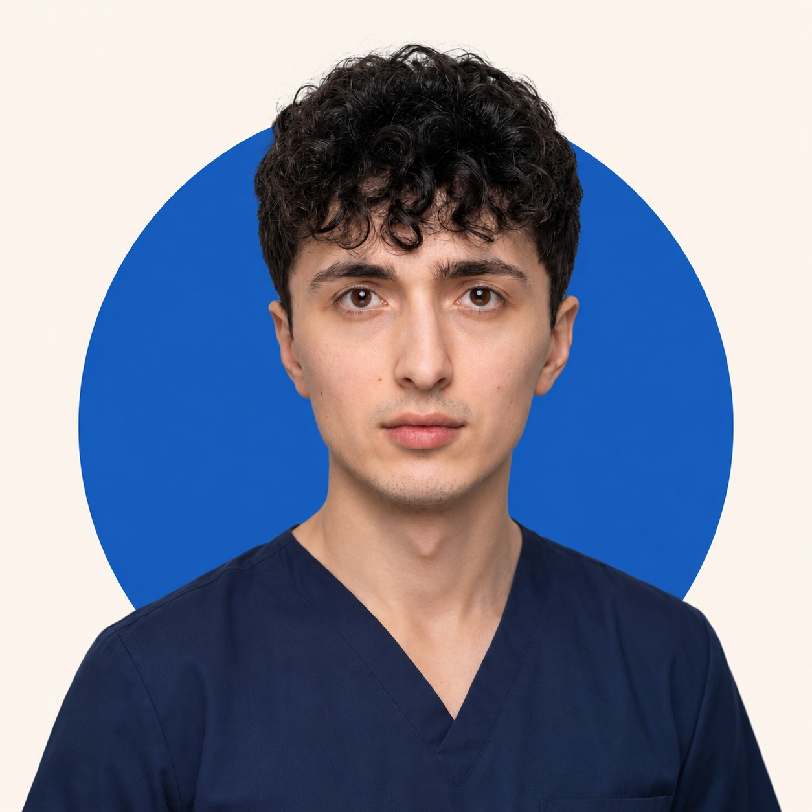
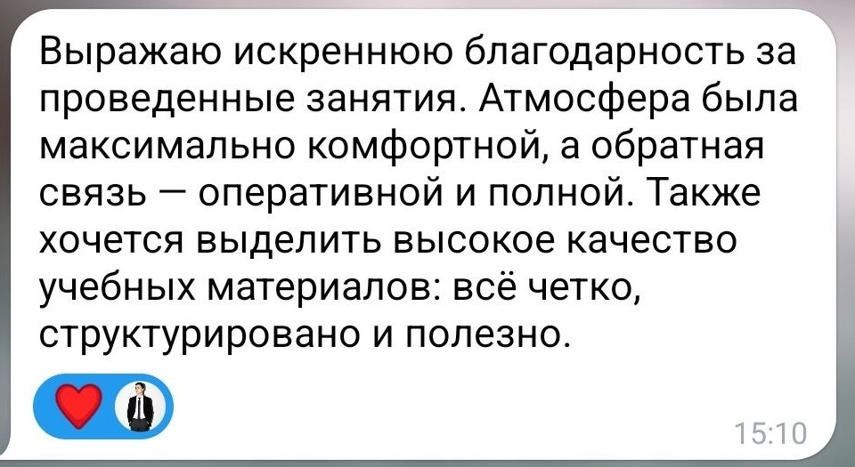

ОНЛАЙН-ЗАНЯТИЯ ДЛЯ СТУДЕНТОВ-МЕДИКОВ
Помогаю понять медицинские дисциплины и подготовиться к экзаменам без бессмысленного заучивания
Объясняю сложные темы простым языком, выстраиваю систему знаний и сопровождаю до успешной сдачи экзамена.
Индивидуальная программаКонспекты и записиДомашние задания с проверкой24/7 на связи
Обсудить обучение↗
Эльман ИсламовВрач-хирург6 лет преподавания700+ студентов
С какими проблемами приходят студенты
Сложный язык учебников и большой объём информации мешают увидеть главное.
Темы запоминаются отдельно и не складываются в общую картину.
Нужен чёткий план, приоритеты и подготовка без хаоса.
Знания есть, но сложно отвечать на вопросы и решать задачи.
НАПРАВЛЕНИЯ
С какими дисциплинами я работаю
ФОРМАТ
Как проходит обучение
Определяем цель, текущий уровень и сроки подготовки.
Составляю индивидуальную программу под вашу задачу.
Разбираем темы, вопросы, задания и сложные моменты.
К каждой теме — домашнее задание с проверкой.
Веду вас до уверенного ответа и успешной сдачи.
ПАКЕТЫ
Выберите глубину подготовки
Пакет 22 занятия
- Индивидуальная программа
- Домашние задания с проверкой
- Конспекты и записи занятий
- Поддержка 24/7
- Сопровождение до результата
от 3 600 ₽ в месяц
Обсудить пакет↗Пакет 36 занятий
- Расширенная программа
- Домашние задания с проверкой
- Конспекты и записи занятий
- Поддержка 24/7
- Сопровождение до результата
от 5 000 ₽ в месяц
Обсудить пакет↗Пробный урок
- Короткое знакомство
- Разбор мини-темы
- Оценка текущего уровня
- План дальнейших занятий
- Ответы на ваши вопросы
0 ₽
Записаться↗ОБО МНЕ
Эльман Исламов
Врач-хирург и преподаватель медицинских дисциплин
Окончил Сеченовский университет по специальности «Лечебное дело» и ординатуру по хирургии в МОНИКИ. Уже 6 лет помогаю студентам разобраться в сложных темах, систематизировать знания и уверенно сдавать экзамены.
6 лет опыта преподавания700+ подготовленных студентов100% сдали экзамен
Написать Эльману↗ОБРАЗОВАНИЕ
Диплом Сеченовского университета
Часть регистрационных данных скрыта.РЕЗУЛЬТАТЫ
Отзывы студентов

FAQ
Часто задаваемые вопросы
Можно ли заниматься с нулевого уровня?
Да.
Что входит в пакет занятий?
Индивидуальный план...
Сколько длится занятие?
Я не привязываю работу к жёсткому таймеру...
Как проходит бесплатный пробный урок?
Разбираем небольшую тему...
ГОТОВЫ НАЧАТЬ?
Расскажите, какой предмет вам необходимо подготовить
Напишите мне в Telegram — обсудим цель и подберём подходящий формат.